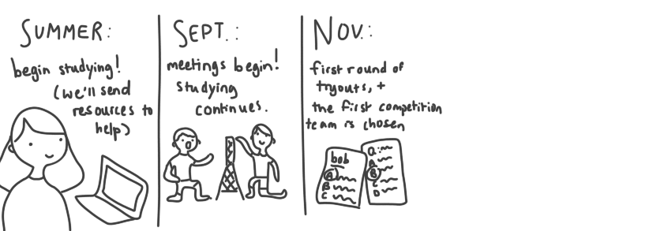
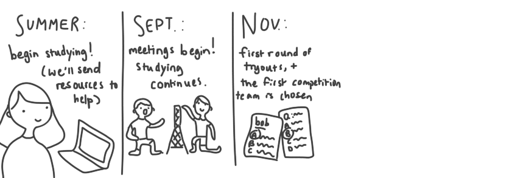

What is Science Olympiad, anyway?

In Science Olympiad, we learn about a lot of different science subjects, also known as events, over the course of a few months (October-March). We then improve upon our knowledge and show off our skill at competitions (various college invitationals, Regionals, and States, and sometimes Nationals). Here at Montgomery, we pride ourselves as being one of the top teams in the state (#2), as well as a tight-knit family of like-minded science aficionados! Science Olympiad is really a wonderful experience, and if you're interested in joining, this site has all the resources you'll need to get started.
First, here's all of the 2017-2018 events in full:
Anatomy & Physiology, Astronomy, Chemistry Lab, Disease Detectives, Dynamic Planet, Ecology, Experimental Design, Fermi Questions, Forensics, Game On, Helicopters, Herpetology, Hovercraft, Materials Science, Microbe Mission, Mission Possible, Mousetrap Vehicle, Optics, Remote Sensing, Rocks and Minerals, Thermodynamics, Towers, Write It Do It
As you can see, there's a lot of variety in what studies you can pursue! So there's definitely something for everyone, and we encourage you to find your "something." Feel free to look at these events in more detail on our event intro page.How does the competition season work?
We meet on Wednesdays and Thursdays every week. Meetings are designated as times for team members to study and practice with their teammates. After a few weeks, test-based tryouts happen. Next, competition teams are selected based off of these tryouts and evidence of commitment (i.e. going to meetings and whatnot). Competitions are day-long, and test-based as well. You may be asked to write an experimental design, take a scantron test, or complete a task with a build. A competition may be overnight on a weekend, or just a day trip on a weekday. Here's a helpful timeline of events to clarify further:

